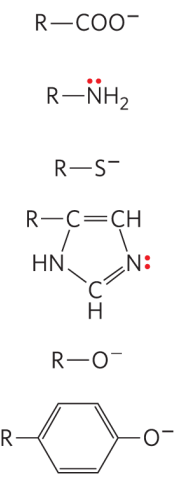
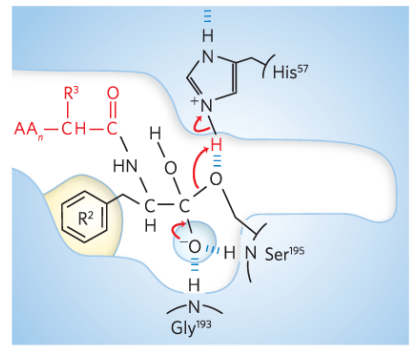

7.How Enzymes Work
Return to IntroductionPrevious:6.Amino Acid Metabolism
Next:8.Regulation of Enzymes
7.1.Profile of enzymes
Complex and precise catalytic processes exist in living organisms. For example, humans can obtain a large amount of sugar substances from food and drinks, and through a series of complex reactions, convert the carbon skeleton in sugar into CO2, while releasing a large amount of energy for the body's life activities to utilize. This process is called biological oxidation. However, the sugar molecules in foods stored in the external environment for a month, a year, or even decades are difficult to convert into CO2 and H2O. Therefore, compared to this difficult extracellular chemical oxidation, biological oxidation inside the organism can be completed in a matter of seconds, mainly due to the presence of enzyme catalysis.
Enzyme refers to highly efficient and specific biocatalysts produced by living cells. The vast majority of enzymes are proteins, as both enzymes and protein consist of amino acid residues. Enzymes and proteins share similar properties: they cannot pass through semipermeable membranes, have similar color reactions, and exhibit maximum absorbance at OD280. Additionally, factors that denature proteins also denature enzymes.
Ribozyme refers to an RNA molecule with catalytic activity. Only a small fraction of enzymes are ribozymes, and these enzymes can participate in processes such as splicing and circularization after self-transcription, such as 23srRNA in the 50s large subunit.

Enzymes play a crucial role in the biological system. Almost all biochemical reactions within the organism require enzyme catalysis, allowing large nutrient molecules to be rapidly broken down into small carbon skeletons, and chemical energy to be rapidly converted into biological energy. The onset of many diseases is due to the lack of certain enzymes or the overexpression of certain enzymes. Determining the enzyme activity of specific enzymes in blood or specific tissue samples is beneficial for disease diagnosis. In the field of biomedicine, the principles behind the design of many drugs depend on whether they can interact with specific sites on enzyme molecules (molecular docking). Meanwhile, enzymes also play important roles in the food industry, fermentation industry, and agriculture.
7.1.1.Common Features and Individuality of Enzymes
(Ⅰ) Common Features of Enzymes Relative to Chemical Catalysts
- Accelerate reaction rates and significantly reduce activation energy.
- Do not change the equilibrium point (equilibrium constant) of the reaction, only shorten the time required to reach equilibrium.
- The quantity is not consumed before and after the reaction, and the chemical nature does not change.
- For reversible reactions, both forward and reverse directions can be catalyzed.
(Ⅱ) Individuality of Enzymes Relative to Chemical Catalysts
After binding with substrates, enzymes form specific ES complexes.
Most enzymes are proteins and are prone to denaturation in high temperatures and extreme pH environments, thus requiring mild reaction conditions.
Enzyme catalytic activity is much higher, approximately 107-1013 times that of chemical catalysts.
Enzymes exhibit stronger specificity and can only catalyze a specific substrate or class of substrates, leading to specific reactions and products.
Structural Specificity
Relative Specificity
- Bond Specificity - Enzymes only act on certain chemical bonds
- Group Specificity - Enzymes have specificity for both the chemical bond and the end groups
Absolute Specificity - An enzyme catalyzes only one type of substrate
Stereo Specificity
Geometric Isomer Specificity - Berberine oxidase catalyzes only berberine (anti-butenyldioic acid), not cis-butenyldioic acid
Optical Isomer Specificity - L-Glu dehydrogenase catalyzes the oxidative deamination of L-Glu only.
Enzyme activity can be regulated
Significance of studying microbial cell regulation
- It helps to advance the research on metabolic regulation in higher organisms.
- It helps people to deliberately change the cellular metabolic balance and control the direction and capacity of metabolism in microorganisms, in order to produce the desired metabolic products.
7.1.2.Enzyme Nomenclature and Classification
For a long time, enzymes were named based on their substrate types and catalytic reaction types, such as DNA polymerase, which catalyzes the polymerization of four free deoxyribonucleotides to form DNA; hexokinase, which catalyzes the phosphorylation of glucose to form glucose-6-phosphate. This method is also known as customary nomenclature. However, as the number of discovered enzymes continues to increase, biochemists have adopted an internationally recognized nomenclature and classification method—the systematic nomenclature. This nomenclature method more clearly represents the mechanism of enzyme-catalyzed reactions and the types of substrates involved. The systematic nomenclature requires the catalyzed substrates to be separated by a colon, and if water (H2O) is involved, it can be omitted. The reaction formula for hexokinase is as follows:
The international systematic nomenclature for hexokinase is ATP: glucose phosphotransferase, indicating the transfer of phosphate groups from ATP to glucose.
This system divides enzymes into six major classes:
| Class | Mechanism | Reaction Formula | Example |
|---|---|---|---|
| 1.Oxidoreductases | Catalyze oxidation-reduction reactions | AH2+B=A+BH2 BH2+1/2O2=B+H2O | dehydrogenase, oxidase |
| 2. Transferases | Catalyze group transfer reactions | AB+C=AC+B | transaminase, methyltransferase, kinase, Phosphatase, Phosphorylase |
| 3. Hydrolases | Catalyze hydrolysis reactions | AB+H2O=AOH+BH | protease, nuclease, lipase, amylase, esterase |
| 4. Lyases | Catalyze the removal of groups or atoms from substrates to form double bonds and their reverse reactions, often without energy consumption | A+B=C | Aldolase, deaminase, decarboxylase, hydratase |
| 5. Isomerases | Catalyze the interconversion of isomers | A=B | Phosphoglucose isomerase, racemase, epimerase |
| 6. Ligases | Catalyze the polymerization of multiple substances into one substance using ATP as an energy source | A+B+ATP=C+ADP | DNA ligase, carboxylase, aminoacyl tRNA synthetase |
Therefore, each enzyme has an enzyme commission number, such as hexokinase—EC 2.7.1.1. Here, EC stands for Enzyme Commission, the first digit "2" represents the second major class of enzymes (transferase), the second digit "7" represents the seventh subclass (phosphotransferase), the third digit "1" represents the first sub-subclass (hydroxyl group as the acceptor of the phosphate group), and the fourth digit "1" represents the sequence number within the sub-subclass (glucose as the recipient of the phosphate group).
7.1.3.Enzyme Structure and Composition
(Ⅰ) Enzyme Structure
Based on the characteristics of enzyme structure, enzymes can be classified into the following three categories:
Monomeric Enzyme Enzyme molecules composed of a single polypeptide chain or a single subunit, examples include lysozyme and bovine pancreatic ribonuclease (RNaseⅠ/A).
Oligomeric Enzyme Enzyme molecules formed by the condensation of two or more subunits via non-covalent bonds. Most key enzymes in metabolic pathways are oligomeric enzymes, such as hexokinase, phosphofructokinase, pyruvate kinase, glyceraldehyde-3-phosphate dehydrogenase, and aspartate aminotransferase.
Multienzyme Complex A complex formed by multiple enzyme molecules aggregating and assembling via non-covalent bonds, responsible for catalyzing a series of continuous reactions, such as fatty acid synthase, pyruvate dehydrogenase complex, and α-ketoglutarate dehydrogenase complex.
(Ⅱ) Enzyme Composition
The key to enzyme catalysis lies in the active center within the enzyme molecule. The active center consists of several closely connected amino acid residues in space and is responsible for binding substrates and catalyzing reactions. Mature enzymes are highly folded peptide chains, so several amino acid residues that may be far apart in the peptide chain can be closely connected in space after folding, forming the active center. Therefore, the active center only occupies a very small part of the enzyme molecule. The active center contains a catalytic site and a binding site, with the latter binding the substrate and determining substrate specificity, and the former catalyzing the reaction and determining the nature of the reaction. The active center is usually located in a hydrophobic cavity, where the interaction and binding forces between the catalytic group and the substrate are increased due to the low dielectric environment. The stable conformation of the active center maintains the catalytic activity of the enzyme, and if the active center is disrupted, the enzyme will become inactive.
Essential Groups refer to the side chain groups on amino acid residues closely related to the catalytic activity and maintenance of the correct conformation of the enzyme molecule. These essential groups, when modified by certain chemical groups, can change or lose the enzyme's activity or function. Several common essential groups include:
- β-COOH (Asp), -OH (Ser, Tyr), -SH (Cys), imidazole group (His), ε-NH3 (Lys)
Additionally, some enzyme molecules exhibit allosteric effects, so there are regulatory sites in the molecule that bind allosteric effectors.
Based on the characteristics of enzyme composition, enzymes can be divided into the following two categories:
Simple Enzyme Enzyme molecules composed solely of amino acids, and the catalytic reactions of these enzymes do not require the involvement of other chemical groups, such as RNaseⅠ and lysozyme.
Conjugated Enzyme Enzyme molecules that, in addition to amino acids as structural components, also require the participation of an additional class of chemical groups during catalysis, known as cofactors. Such enzymes are also known as holoenzymes, and the protein portion after removing the cofactor is referred to as apoenzyme. In a holoenzyme, the apoenzyme is responsible for binding the substrate and catalyzing the reaction, while the cofactor helps to transfer electrons, atoms, or functional groups.
The full enzyme with the cofactor removed loses its activity.
These cofactors include some inorganic ions, such as Fe2+, Mg2+, Mn2+, Zn2+, or some non-protein small molecules called coenzymes or prosthetic groups, which play the role of transient carriers of functional groups during catalysis. Coenzymes loosely bind to the enzyme protein in a non-covalent manner and can be removed by physical methods such as ultrafiltration and dialysis; prosthetic groups bind tightly to the enzyme protein in a covalent manner and can only be removed through chemical methods. Removal of the cofactor renders the holoenzyme inactive. These coenzymes/prosthetic groups are typically the active forms of vitamins. The table below lists several common coenzymes/prosthetic groups and their functions. Please refer to 9.vitamins for more details.
| Type | Source | Function |
|---|---|---|
| Thiamine pyrophosphate (TPP) | Vitamin B1 | Involved in (oxidative) decarboxylation reactions |
| Flavin adenine dinucleotide (FAD) | Vitamin B2 | Involved in transferring H and e- |
| Nicotinamide adenine dinucleotide (NAD+) | Vitamin B3 | Involved in transferring H and e- |
| Acetyl-CoA | Vitamin B5 | Transfers acetyl groups |
| Pyridoxal 5'-phosphate | Vitamin B6 | Transamination, decarboxylation of amino acids |
| Biotin | Vitamin B7 | Involved in carboxylation reactions |
| Tetrahydrofolate | Vitamin B11 | Carries one-carbon units |
7.2.Enzyme Mechanism
A simple, single-substrate enzyme-catalyzed reaction can be written in the following form:

Here, E represents the enzyme, S represents the substrate, and P represents the product. ES and EP are two transient unstable intermediate complex states.
Intermediate Complex Theory After binding with the substrate, the enzyme first forms an unstable intermediate complex. Due to the change in reaction pathway, the activation energy of the reaction is greatly reduced, enabling more substrate molecules to be activated at the same energy level. Finally, the intermediate complex breaks down to form the product.
But why does changing the reaction pathway reduce activation energy? There are two explanations: The first explanation is the non-covalent interaction mechanism between the enzyme and the substrate. After the enzyme and the substrate interact to form the intermediate complex, there are non-covalent forces, such as hydrogen bonds, ionic bonds, and hydrophobic interactions, that maintain the structure of this interaction and the intermediate complex. Each weak non-covalent interaction of the intermediate complex is accompanied by the release of some free energy (G), which is also known as binding energy (ΔGB). This energy is used to lower the activation energy of the reaction.
The second explanation is the covalent interaction mechanism between the enzyme and the substrate. In enzyme-catalyzed reactions, the catalytic groups of the enzyme can form a transient covalent bond with the substrate or transfer certain reactive groups of the substrate to the catalytic groups of the enzyme. Therefore, enzyme-catalyzed reactions mostly occur at the active site of the enzyme. This covalent interaction provides an alternative, lower-energy reaction pathway to lower the activation energy of the reaction.
7.2.1.Modes of Enzyme-Substrate Binding
Lock and Key Theory One lock matches one key, and one substrate matches one enzyme. However, since enzymes can catalyze reversible reactions, this theory cannot explain why enzymes can bind to products with different structures.
Transition State Complementarity After the substrate binds to the enzyme, it undergoes a transition to its transition state under the action of the enzyme. When the substrate is completely converted to the transition state and forms the ES intermediate complex, weak interactions are formed between the enzyme and the substrate. These interactions provide the main driving force for enzyme catalysis. The transition state is not a stable state but rather the moment when the substrate reaches the energy peak during the transformation process. This peak is smaller than that of typical chemical catalytic reactions, allowing enzyme-catalyzed reactions to occur faster than non-enzymatic reactions.
Induced Fit Theory When the substrate binds to the enzyme molecule, it induces a conformational change in the active site of the enzyme. This change promotes the specific arrangement of functional groups in the enzyme to catalyze the reaction. At the same time, the substrate also undergoes corresponding conformational changes, increasing the affinity between the active site of the enzyme and the substrate and promoting the formation of the intermediate transition state complex and weak intermolecular interactions.
7.2.2.Reasons for the High Catalytic Efficiency of Enzymes
Proximity Effect After the enzyme binds to the substrate to form a complex, thermodynamic effects increase the concentration of the substrate in the active site of the enzyme, thereby increasing the catalytic efficiency of the enzyme.
Orientation Effect When the enzyme binds to the substrate, there is correct orientation between the reactive groups of the substrate and the catalytic groups of the enzyme, which improves the catalytic efficiency.
Strain Effect The enzyme induces strain in the sensitive bonds of the substrate molecule, making it easier for the substrate to deform into its transition state and increase the catalytic efficiency. For example, Zn2+ in carboxypeptidase.
Hydrophobic Microenvironment of the Active Site The active site of the enzyme is located in a low dielectric hydrophobic microenvironment, where the affinity and interaction forces between the substrate and the enzyme are greater than in a polar environment.
Acid-Base Catalysis Many weak organic acids can act as proton donors, and weak organic bases can act as proton acceptors. Some side chain groups of amino acid residues in the enzyme molecule can play the role of proton acceptor or donor. They can be precisely positioned in the active site of the enzyme and transiently provide or accept protons from the substrate to stabilize the intermediate transition state of the enzyme-substrate complex, thereby increasing the catalytic efficiency and facilitating the conversion of the substrate to product, such as Asp, Lys, Cys, His, Ser, Tyr.
| Common Proton Acceptors | Common Proton Donors |
|---|---|
|  |
Covalent Catalysis Let's assume an enzyme with a nucleophilic group X can participate in the hydrolysis reaction of compound A-B.

Although both reactions produce one A and one B, the enzyme-catalyzed reaction significantly alters the process compared to a normal chemical hydrolysis reaction. The activation energy in the new pathway is much lower than in the non-enzymatic reaction. Therefore, some side chain groups of amino acid residues in the enzyme molecule can act as nucleophilic groups, releasing e- and reacting with the reactive center of the substrate to form a highly active and unstable transition state intermediate, greatly reducing the reaction activation energy and increasing the catalytic efficiency. Several side chain groups that can perform acid-base catalysis can also participate in covalent catalysis.
Metal Ion Catalysis Metal ions that are tightly bound to enzymes or are absorbed by enzymes from solution can participate in catalytic reactions through several mechanisms: metal ions can help orient the substrate, promote the formation of transition states; metal ions can participate in redox reactions through changes in their oxidation states; metal ions can enhance the efficiency of enzyme-catalyzed reactions by shielding or stabilizing negative charges through electrostatic effects. Almost one-third of enzymes require metal ions for catalysis, and these enzymes can be classified into two categories based on their binding mode with metal ions:
- Metalloenzymes Enzymes that tightly bind to certain metal ions (such as Ca, Fe, Zn, Mn, Co) through covalent bonds. The metal ions serve as cofactors for the enzymes, and the enzymes become inactive when the metal ions are lost.
- Metal-activated enzymes Enzymes that loosely bind to certain metal ions (such as Na, K, Ca, Mg) through non-covalent interactions. The metal ions act as activators, and the enzymes retain partial activity even after the metal ions are lost.
Therefore, many enzymes become inactive after dialysis. On the one hand, coenzymes closely related to enzyme activity are removed. On the other hand, essential metal ions are removed by dialysis, leading to unfolding of the enzyme.
7.2.3. Enzymatic Catalysis Example: Serine Protease Family
The serine protease family includes digestive enzymes (trypsin, chymotrypsin, elastase), thrombin, subtilisin, and plasmin. These enzymes utilize a specific Ser as the catalytic group. Among them, the three proteases involved in digestion exhibit different substrate specificities due to differences in the "pocket" structure where the enzyme binds to the substrate: trypsin has an Asp189 residue at the binding site, allowing it to accommodate positively charged Arg and Lys residues; chymotrypsin has a non-polar pocket that can accommodate aromatic amino acids; elastase's pocket blocks access to larger side chains of Val and Thr, allowing only small aliphatic amino acids like Ala to enter.
However, the catalytic mechanisms of these three enzymes are generally similar, involving a catalytic triad (charge relay network) consisting of His57, Asp102, Ser195. These three amino acid residues are closely connected in space and interact through hydrogen bonding. The catalytic mechanism of chymotrypsin is described below:
| 1.When substrate binds, the side chain of the residue adjacent to the peptide bond to be cleaved nestles in a hydrophobic pocket on the enzyme, positioning the peptide bond for attack. | 2.Interaction of Ser195 and His57 generates a strongly nucleophilic alkoxide ion on Ser195; the ion attacks the peptide carbonyl group , forming a tetrahe-dral acyl-enzyme. This is accompanied by formation of a short-lived negative charge on the carbonyl oxygen of the substrate , which is stabilized by hydrogen bonding in the oxyanion hole. |
|---|---|
| 3.Instability of negative charge on the substrate carbonyl oxygen leads to collapse of the tetrahedral intermediate; re-formation of a double bond with carbon displaces the bond between carbon and the amino group of the peptide linkage, breaking the peptide bond. The amino leaving group is protonated by His57, facilitating its displacement. | 4.An incoming water molecule is deprotonated by general base catalysis, generating a strongly nucleophilic hydroxide ion. Attack of hydroxide on the ester linkage of the acyl-enzyme generates a second tetrahedral intermediate, with oxygen in the oxyanion hole again taking on a negative charge. |
| 5.Collapse of the tetrahedral intermediate forms the second product, a carboxylate anion, and displaces Ser195. | 6.Dissociation of the second product from the active site regenerates free enzyme. |
|  |
7.3.Enzyme Activity Assay
7.3.1.Enzyme Activity Assay Parameters
Enzyme activity refers to the ability of an enzyme to catalyze a specific chemical reaction. It is measured by the rate of the catalyzed reaction, which represents the amount of product generated or substrate consumed per unit of time.
Units of enzyme activity
- IU The amount of enzyme required to convert 1μmol of substrate to product in 1min under optimal conditions.
- Kat The amount of enzyme required to convert 1mol of substrate to product in 1s under optimal conditions.
Specific activity refers to the number of enzyme activity units present per mg or ml of enzyme.
Total activity refers to the total number of enzyme activity units in an enzyme sample.
Purification fold refers to the ratio of specific activity after enzyme purification to specific activity before purification, which is an important indicator of the effectiveness of enzyme purification.
Recovery rate refers to the percentage of total enzyme activity after enzyme purification compared to total enzyme activity before purification (because the process of enzyme purification involves an increase in purification fold and a decrease in total enzyme amount).
7.3.2.Principles of Enzyme Activity Assay
- Excess substrate should be used to saturate the enzyme and prevent a decrease in reaction rate due to substrate depletion, which would lead to measurement errors.
- Enzyme activity should be measured when substrate consumption is less than 5%, to prevent measurement errors caused by substrate depletion, changes in the environment, and accumulation of toxic substances during the reaction.
- Substrate and enzyme should be stored in their respective buffer solutions under optimal conditions before mixing, to ensure that the enzyme catalyzes the substrate with maximum activity.
- The reaction rate should be calculated based on the increase in product, because it is difficult to accurately measure the consumption of excess substrate, while the increase in product is a process from 0 to 1, which is easier to calculate.
7.3.3.Methods for Enzyme Activity Assay
Spectrophotometric method: The product or its derivative exhibits maximum absorbance at a certain wavelength, and the increase in absorbance is used to measure the increase in reaction product.
For dehydrogenases using NAD(P)+ as substrate, the product NAD(P)H exhibits maximum absorbance at 340nm, while NAD(P)+ does not absorb at this wavelength.
Fluorescence method: The product is converted into a fluorescent substance, and the increase in fluorescence is used to determine the increase in product.
Radioisotope method: The substrate is labeled with a radioactive marker, and after the reaction, the product also carries the corresponding radioactive marker, which is determined by detecting radioactivity to determine the increase in product.
7.4.Enzyme Kinetics
Enzyme kinetics is a discipline that studies the rate of enzyme-catalyzed reactions and the factors that influence them.
7.4.1.Enzyme-Catalyzed Reaction with a Single Substrate
The reaction can be divided into two steps. In the first step, the enzyme reversibly binds with the substrate to form an enzyme-substrate (ES) complex, which then slowly decomposes to yield free enzyme and product (P). Since the second step is the rate-limiting step, the concentration of ES determines the overall reaction rate. In enzyme-catalyzed reactions, enzymes exist in two forms: the unbound form E and the bound form ES after binding with the substrate.
Initially, scientists proposed the Michaelis-Menten equation to describe the relationship between the substrate concentration [S] and the enzyme-catalyzed reaction rate V, using the concept of the ES complex derived from the rapid equilibrium method. The equilibrium constant Ks is also known as the dissociation constant:
However, later experiments revealed that when enzymes were mixed with an excess of substrate, the ES complex was formed. When the concentration of ES accumulated to a certain level, it entered a state of steady state, where the rate of consumption of ES equaled the rate of generation, resulting in nearly constant concentration. Therefore, scientists further derived a new version of the Michaelis-Menten equation based on the steady-state theory, known as the Michaelis constant (Km). Three conditions must be met to reach a steady state:
- Excessive [S] leading to enzyme saturation
- Disregard of the E+P-->ES reaction
- Rate of ES consumption equals rate of generation
In comparison to Ks, the formula for Km includes K2 (Kcat) in the numerator. K2 can be ignored only when K2 is much smaller than K-1. However, due to the transient nature of this state, the derivation of the Michaelis-Menten equation using the rapid equilibrium method has limitations:
7.4.2.Kinetic Parameters
(Ⅰ) V and Vmax
(Ⅱ) Km
By analyzing the Michaelis-Menten equation, when V=½Vmax, it can be deduced that Km=[S]. Therefore, the Michaelis constant Km is defined as the substrate concentration at which the enzyme-catalyzed reaction rate V reaches half of the maximum rate Vmax. Km has the following implications:
- It is a characteristic constant of the enzyme, independent of the enzyme's concentration, and only related to the enzyme's properties, substrate type, and reaction environment.
- 1/Km represents the affinity of the enzyme for the substrate. A larger value indicates a smaller Km and greater affinity, and vice versa. Therefore, Km can be used to determine the optimal substrate and reaction direction for the enzyme.
- The Km value of the rate-limiting enzyme in a pathway is relatively large, so lowering the Km can relieve pathway limitations.
- The presence of inhibitors or activators will increase or decrease the Km.
- Degree of enzyme saturation by the substrate: fES=V/Vmax=[S]/(Km+[S])
- When comparing the catalytic rates of different enzymes or the conversion of the same enzyme with different substrates, it is best to use kcat/Km. A larger value indicates higher catalytic efficiency.
(Ⅲ) Kcat / K2
Kcat (/s) also known as turnover number, refers to the amount of substrate molecules catalyzed by each mole of enzyme or the active site of the enzyme per second when the enzyme is saturated with the substrate. It represents the size of the enzyme's catalytic capacity.
Calculation Example of Kcat:
Given that an enzyme has a relative Mr of 80,000, composed of two identical subunits, each containing an active site, and under optimal conditions, 10 μg of the enzyme can catalyze the conversion of 4 μmol of substrate to product per minute. Calculate the turnover number Kcat.
- The enzyme weighs 10 μg and has a total molecular weight of 80,000, consisting of two identical subunits, each with an active site. Therefore, the number of moles for each subunit as an active site is: 10/40000=0.00025 μmol.
- With this amount of enzyme (active site), 4 μmol of substrate is converted in 60s, therefore 1μmol of substrate is converted in (4/60) μmol per second. Thus, the amount of substrate converted per second by each μmol of enzyme active site is (4/60)/0.00025=266.7/s.
7.4.3.Calculating Km and Kcat
- Lineweaver-Burk double reciprocal method

7.4.4.Factors influencing the rate of enzyme-catalyzed reactions
(Ⅰ) Substrate concentration
With a fixed enzyme concentration, the influence of different substrate concentrations [S] on V is shown in the graph below:
First order reaction(AB) When the substrate concentration is low, i.e., [S] ≤ Km, the rate of the enzyme-catalyzed reaction V is directly proportional to the substrate concentration [S]. The Michaelis-Menten equation can be expressed as:
Mixed order reaction(BC) This refers to the reaction stage when 0.1Km ≤ [S] ≤ 100Km. When V = 1/2 Vmax = 1/2 kcat [E0], Km is equal to [S].
Zero order reaction(after C) When the substrate saturates the enzyme and the reaction rate reaches its maximum, which does not change with increasing substrate concentration, the reaction stage is reached when [S] ≥ Km. In this stage, V = Vmax = kcat [E0], and the enzyme is saturated with the substrate. This stage is used to measure enzyme activity.
(Ⅱ) Enzyme concentration
When the substrate saturates the enzyme, V reaches its maximum. Adding more substrate at this point will not change the enzyme-catalyzed reaction. The reaction becomes a zero order reaction with respect to the substrate concentration, but it remains a first order reaction with respect to the enzyme concentration. Therefore, by increasing the enzyme concentration, the rate of enzyme-catalyzed reaction can be increased.
This is also the period for measuring enzyme activity

(Ⅲ) Temperature
The typical curve showing the relationship between temperature and the rate of enzyme-catalyzed reaction is called a bell-shaped curve
As the temperature increases, the enzyme activity rapidly increases, leading to an increase in the rate of enzyme-catalyzed reaction. When the temperature exceeds the optimal temperature for the enzyme, the enzyme starts to denature and become inactive, resulting in a decrease in the rate of enzyme-catalyzed reaction. The entire process of enzyme-catalyzed reaction is a balance between these two processes. Below the optimal temperature, the former effect dominates, while above the optimal temperature, the latter effect predominates.
The optimal temperature is not a characteristic constant of the enzyme and can vary depending on the reaction conditions. A higher optimal temperature leads to a faster enzyme-catalyzed reaction. Therefore, thermostable enzymes are commonly used in wastewater treatment, PCR, industrial fermentation processes, and biofuel production.
(Ⅳ) pH
The typical curve showing the relationship between pH and the rate of enzyme-catalyzed reaction is not always a bell-shaped curve
Extremely high or low pH values can directly cause denaturation and inactivation of the enzyme. In addition, pH can affect substrate dissociation, as well as the dissociation of reaction groups in the enzyme. pH can also affect the dissociation of the intermediate complex ES. The optimal pH is not a characteristic constant of the enzyme and can vary depending on the reaction conditions.
(Ⅴ) Activators and inhibitors
Refer to Section 8: Regulation of Enzymes